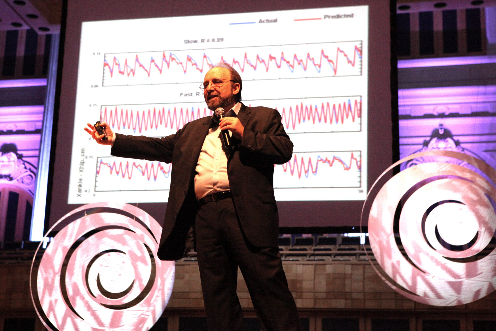

Miguel Nicolelis
Miguel Nicolelis cursou medicina na Universidade de São Paulo (USP) e fez doutorado no Instituto de Ciências Biomédicas, também na USP. Mudou-se para os Estados Unidos em 1989, fez pós-doutorado na Universidade Hahnemann, na Filadélfia e em 1994 tornou-se professor assistente de neurobiologia da Universidade Duke, na Carolina do Norte. Atualmente é Professor Titular de Neurobiologia e Co-Diretor do Centro de Neuroengenharia da Duke University, Estados Unidos, Consultor do Instituto do Cérebro da École Polytechnique Fédérale de Lausanne (EPFL), Suíça, e Coordenador do Instituto Internacional de Neurociências de Natal Edmond e Lily Safra (IINN-ELS), Brasil. Chefia um grupo de 30 pesquisadores do Centro de Neuroengenharia da Universidade de Duke, que emprega ferramentas computacionais, robótica e métodos neurofisiológicos para registros múltiplos de neurônios com o intuito de desenvolver neuropróteses capazes de restaurar a mobilidade dos membros superiores de pacientes paralisados por trauma ou degeneração do sistema nervoso central. Trouxe suas pesquisas também para o Hospital Sírio-Libanês de São Paulo e para o Instituto Internacional de Neurociências de Natal Edmond e Lily Safra (IINN-ELS), no Brasil. Ganhou 32 prêmios internacionais, escreveu cinco livros e publicou mais de 150 artigos, dos quais sete na Science e na Nature, as revistas científicas mais importantes do mundo. Apontado em 2004 pela revista Scientific American como um dos 20 maiores cientistas da atualidade. Dentre os prêmios mais importantes destacam-se: Cátedra Anne Deane de Neurociência, agraciado pela Duke University; Cátedra Santiago Ramón y Cajal, pela Universidade Nacional do México; Cátedra Santiago Grisolia, pela Universidade de Valência; Quatro vezes agraciado com o Prêmio Grass Lecture da Sociedade Americana de Neurociência; Cátedra Blaise Pascal, pela Escola Normal Superior de Paris; Professor Honoris Causa da Universidade Federal do Rio Grande do Norte, Natal, Brasil; Conselho Científico Consultivo, Brain and Behavior Discovery Institute, Faculdade de Medicina de Georgia; Prêmio Plasticidade Neuronal da Fundação IPSEN.
Projeto Andar de Novo
O projeto Andar de Novo é resultado da união de neurociência, robótica, nanotecnologia e prostética de um grupo internacional de pesquisadores. Nicolelis, que trabalha na Universidade de Duke, nos Estados Unidos, foi responsável pelo desenvolvimento dos sensores que “leem pensamentos” e os enviam ao exoesqueleto, um sistema conhecido como interface cérebro-máquina-cérebro. O trabalho robótico ficou a cargo de cientistas alemães e, na França, construiu-se a veste. Suíços também participaram do projeto, que recebeu R$ 33 milhões da Agência Brasileira da Inovação (Finep).
O Impacto do Projeto Andar de Novo
O Projeto Andar de Novo e o exoesqueleto Brasil Santos Dumont 1 tiveram um impacto profundo na neurociência e na reabilitação de pessoas com paralisia. Lançado em 2014, o projeto foi um marco ao permitir que, pela primeira vez, um paraplégico se levantasse da cadeira de rodas e andasse usando um exoesqueleto controlado por sinais cerebrais. Esse feito não só simbolizou uma vitória tecnológica, mas também trouxe esperança a milhões de pessoas com lesões na medula espinhal. A inovação de Nicolelis e sua equipe integrou neurociência, robótica e interfaces cérebro-máquina, possibilitando que o cérebro se comunicasse diretamente com o exoesqueleto, proporcionando ao usuário a sensação de movimento e até estímulos táteis. Passados 10 anos desde a primeira demonstração, o projeto continuou a evoluir, mas ainda enfrenta desafios significativos, como a melhoria da duração da bateria e a eficiência dos sensores. No entanto, o impacto desse avanço vai além da tecnologia: ele incentivou o desenvolvimento de novas terapias e dispositivos para reabilitação, com um aumento na compreensão sobre a interação cérebro-máquina. Hoje, o legado do Projeto Andar de Novo se reflete em um campo em expansão, que já busca integrar soluções mais acessíveis e funcionais para pessoas com deficiência motora, com o potencial de transformar a medicina e melhorar a qualidade de vida de pacientes ao redor do mundo.
Outros Projetos
O projeto Andar de Novo é resultado da união de neurociência, robótica, nanotecnologia e prostética de um grupo internacional de pesquisadores. Nicolelis, que trabalha na Universidade de Duke, nos Estados Unidos, foi responsável pelo desenvolvimento dos sensores que “leem pensamentos” e os enviam ao exoesqueleto, um sistema conhecido como interface cérebro-máquina-cérebro. O trabalho robótico ficou a cargo de cientistas alemães e, na França, construiu-se a veste. Suíços também participaram do projeto, que recebeu R$ 33 milhões da Agência Brasileira da Inovação (Finep).
Neuroengenharia
A neuroengenharia é uma disciplina inovadora que visa conectar o cérebro humano a máquinas e dispositivos externos, criando soluções para restaurar funções perdidas ou melhorando a interação entre o sistema nervoso e a tecnologia. Através dessa área interdisciplinar, cientistas, como Miguel Nicolelis, têm trabalhado para desenvolver próteses neurais, interfaces cérebro-máquina e dispositivos robóticos, com o objetivo de recuperar a mobilidade e outras funções motoras de pessoas com paralisias ou lesões no sistema nervoso central.
O projeto mais recente de Miguel Nicolelis dentro da neuroengenharia envolve o desenvolvimento de tecnologias ainda mais avançadas em interfaces cérebro-máquina, que têm como foco não apenas restaurar a mobilidade de pacientes, mas também criar uma conexão mais integrada e natural entre o cérebro e os dispositivos robóticos. Nicolelis tem explorado formas de aperfeiçoar a comunicação entre o cérebro e as próteses, utilizando sensores mais precisos e sofisticados para registrar a atividade neural e traduzir esses sinais em movimentos mais fluidos e naturais. Uma das áreas em que ele tem investido esforços é a criação de neuropróteses de próxima geração, que não apenas auxiliam na movimentação dos membros, mas também permitem que os pacientes sintam o ambiente ao seu redor através de estímulos táteis, tornando a experiência mais imersiva e realista. A ideia é melhorar a sensação de controle e percepção do movimento, o que é fundamental para a funcionalidade e a autonomia do paciente. Além disso, Nicolelis também tem explorado a integração de tecnologias de estimulação elétrica, com o objetivo de reativar áreas danificadas do cérebro e da medula espinhal, impulsionando ainda mais as perspectivas de reabilitação. Apesar dos desafios técnicos que ainda precisam ser superados, como a miniaturização dos dispositivos e a durabilidade das baterias, o trabalho atual de Nicolelis continua a abrir novas possibilidades para a medicina e para a reabilitação de pacientes com deficiências motoras. O progresso da neuroengenharia, sob sua liderança, promete não apenas melhorar a qualidade de vida de milhares de pessoas, mas também impulsionar um novo capítulo nas terapias para lesões cerebrais e medulares, oferecendo um futuro com mais autonomia e integração com a tecnologia.
